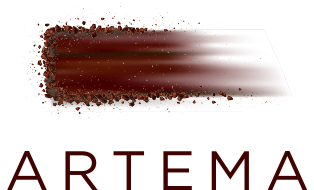

Incontri a tavola · Artema · Vetera Matera
Estatico e Capitaneo: l’ultimo incontro di GESTI
Eduardo Estatico ospita Remo Capitaneo, chef di Verso a Milano, per una cena a quattro mani.
Evento del · Matera, Italia

L’ultimo appuntamento di GESTI 2026 riunisce Eduardo Estatico e Remo Capitaneo ad Artema, il ristorante gastronomico di Vetera Matera. La cena a quattro mani è in programma il 29 settembre, tra i Sassi.
Dalla Campania e dalla Puglia
Estatico è napoletano; Capitaneo è pugliese e lavora a Verso, a Milano. Il menu annunciato attraversa anche la Basilicata, con ingredienti del Mezzogiorno interpretati secondo le esperienze dei due chef.
Il rispetto della materia prima e della stagione accomuna le loro cucine. L’incontro ad Artema permette di accostarle nello stesso menu.


La cena conclude l’edizione 2026 di GESTI. Gli appuntamenti precedenti hanno ospitato Enrico Bartolini, Floriano Pellegrino e Isabella Potì.
Immagini pubblicate da Falstaff nell’articolo dedicato all’evento. Credito originale: «Foto fornita».
Fonte e approfondimento: Falstaff